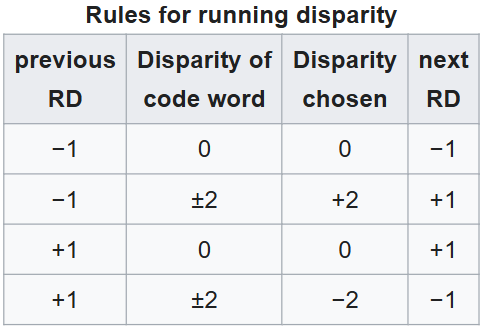

Data path
Encoding
8b/10b Encoding
Base
Why_is_this_needed
- Synchronization:
- The presence of frequent transitions between 1 and 0 helps the receiver maintain synchronization with the signal, even if the original data contains a long sequence of identical bits.
- DC balance:
- Eliminates DC offset in the communication line, which simplifies transmission and reception circuits (no need to worry about transmitting "DC components").
- Error detection:
- Some errors can be detected at the encoding level, as incorrect 10-bit sequences can simply be discarded.
Two_stages
- 8b/10b encoding is divided into two stages:
- 8b/6b encoding: Converts 5-bit data into 6-bit code words.
- 3b/4b encoding: Converts the remaining 3 bits into 4-bit code words.
Running disparity
Definition
-
In 8b/10b encoding, disparity is the difference between the number of ones (1) and zeros (0) in a codeword. 
- Positive and Negative Disparity
- Positive disparity (+RD, +2) means that there are more ones (1) than zeros (0) in the codeword.
- Negative disparity (-RD, -2) means that there are more zeros (0) than ones (1) in the codeword.
- Zero disparity (0) means that the number of zeros (0) and ones (1) in the codeword is equal.
- Positive and Negative Disparity
-
Pos_neg_disparity
- Examples of 10-bit Codes
- Code with Positive Disparity (+2)
- 1110101100 (7 ones, 3 zeros → +2)
- In this word, there are 7 ones and 3 zeros. Therefore, the disparity is +2.
- Code with Negative Disparity (-2)
- 0001010010 (3 ones, 7 zeros → -2)
- In this word, there are 3 ones and 7 zeros. Therefore, the disparity is -2.
- Code with Positive Disparity (+2)
- Examples of 10-bit Codes
-
How_work
- The transmitter monitors the accumulated disparity (Running Disparity, RD).
- If there were more ones before (RD = +1), it selects a code with negative disparity (-2) to bring RD back to -1.
- If there were more zeros before (RD = -1), it selects a code with positive disparity (+2) to bring RD back to +1.
- This helps maintain an even distribution of 1s and 0s in the signal.
- The transmitter monitors the accumulated disparity (Running Disparity, RD).
5b/6b code (abcdei) and 3b/4b code (fghj)
K-codes
K-codes (K-symbols) are special control symbols in 8b/10b encoding that do not represent regular data. They are used for synchronization, data flow control, packet delineation, and other service functions.
-
Why are K-symbols needed?
- In digital transmission, there are usually two types of data:
- Regular (D-codes, "Data") – These are useful data transmitted in a packet.
- Control (K-codes, "Control") – These are special symbols that help the transmitter and receiver synchronize
- In digital transmission, there are usually two types of data:
-
Why K.28.5?
- It contains 5 consecutive ones (11111), which do not appear in regular data, making it easy to recognize.
- This makes it an ideal frame start marker – the receiver immediately sees where a new data packet begins.
Example
- K.28.5 D.5.6 D.16.2 D.4.3 D.10.5 ...
- K.28.5 → Control character for start of packet
- D.5.6, D.16.2, D.4.3, D.10.5 → Regular data
64b/66b Encoding
-
Base
- Used in 10+ Gbit/s Ethernet (10GBASE-R).
- Lower overhead (only 3% compared to 25% in 8b/10b).
- Works similarly like 8b/10b but adds a 2-bit header to a 64-bit block.

{kind=link}
{kind=link}
{kind=link}
{kind=link}
{kind=link}
{kind=link}